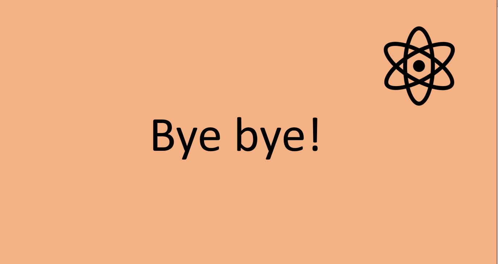

„Stickstoff“ - Wo gibt es den hier auf der Welt überhaupt? Brauchen wir ihn eigentlich? Nutzen wir Stickstoff auch in unserem Alltag? Jene Fragen wollen wir euch nun zum Schluss dieseser Website beantworten.
Stickstoff gibt es fast überall; in Pflanzen, Tieren, Salzen, im Boden, in der Luft und sogar in uns Menschen. Wir atmen es jeden Tag ein und aus. Die Luft die wir einatmen besteht sogar zu 78% aus Stickstoff. Es kommt als Abgas auch teilweise aus unseren Autos. Zudem findet es Verwendung als Kühlmittel in der Medizin und bei Lebensmitteln. Außerdem ist es ein Treibgas in Spraydosen wie zum Beispiel DEOs.Wie auch schon am Anfang erwähnt kommt Stickstoff auch im Urin oder in der Gülle vor. Gülle wird in der Landwirtschaft vor allem zum Düngen von Feldern genutzt. Forscht doch einmal nach, welche Verwendung andere Elemente haben. Es lohnt sich, das Periodensystem genauer anzuschauen und sich mit den anderen Elementen zu beschäftigen.
 < Letzte Seite